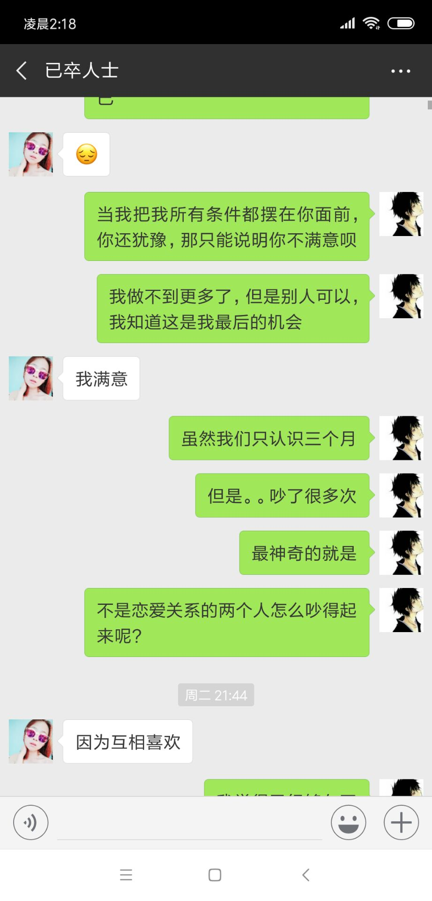
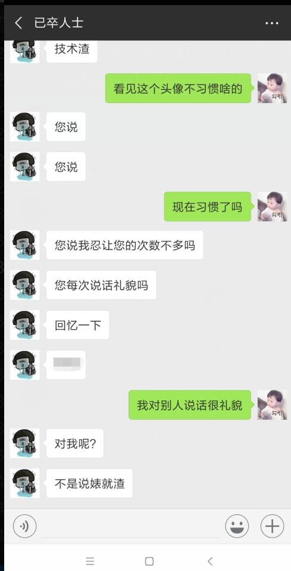
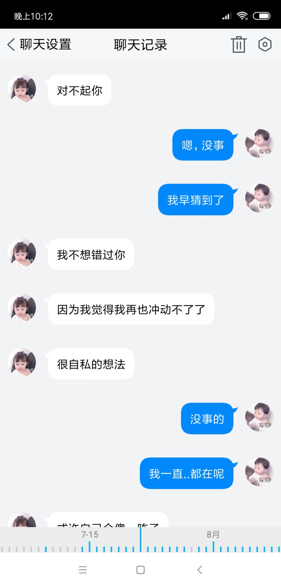
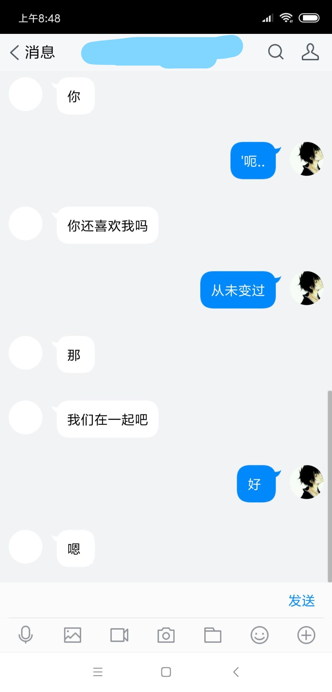
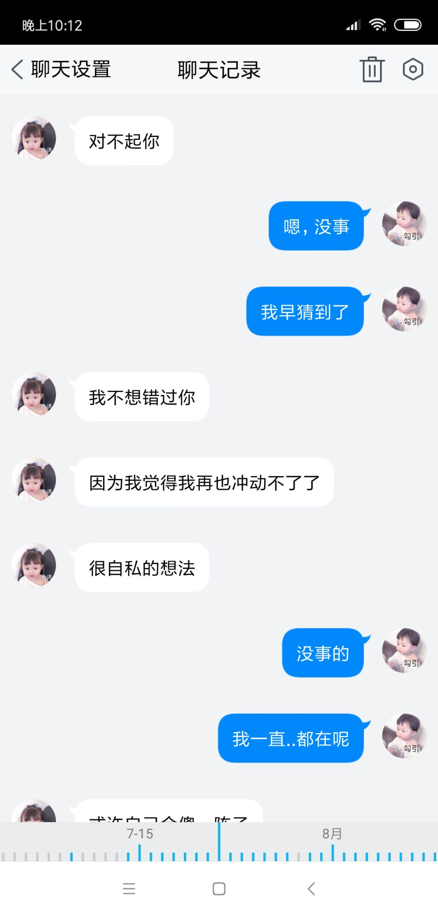
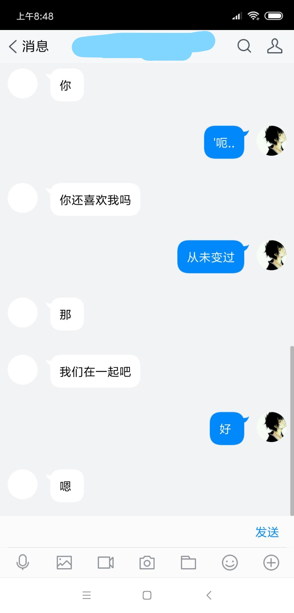
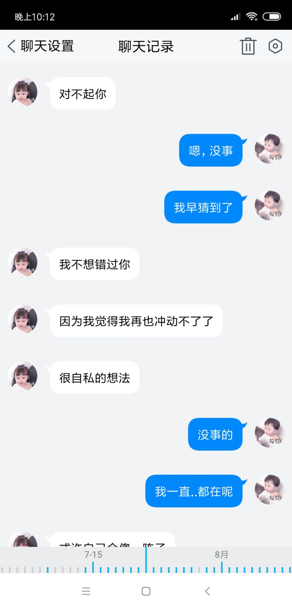
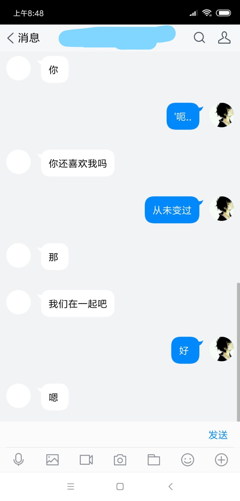

/**
* 第四章
* 我回到杭州,她在学校,每天和我抱怨学校热。
* day1晚上,她和我说他们分手了。
* day2早起,她和说在一起,并说来杭州,我给她买了高铁票。
* 期间她情绪极度不稳定,我一直没睡觉安抚她。
* day3下午,她说她只是一时冲动。我无言,问我导(女)+学妹,她们叫我远离她。
* day4我问她的决定,她说对不起我选择单身,我拉黑她。
* day6她加回我,我们电话大吵。
* day7她警告我学妹目的不纯,叫我远离她。
* day maybe 15 我再次问她想法,她说她需要时间,并且她去广州旅游,她前男友在广州。
* after 1 day 我再次问她,她仍说需要时间。
*
* 八月
* 我发现她和她前男友挂情侣头像并且未删好友,我质问她她不答。
* 学妹说我好骗,并且说学姐也知道我好骗,再次要我远离她。
*
* 8.11 她要我帮她做笔试,我拒绝,她大怒,并且全面拉黑我,不再访问我空间。
*/


 





